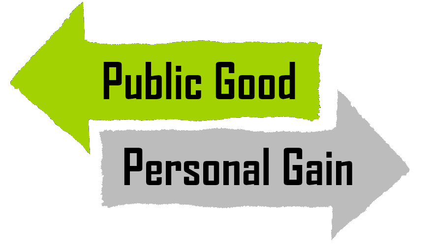
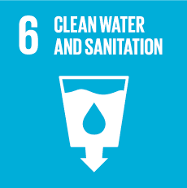
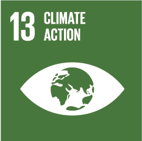
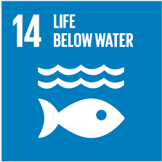
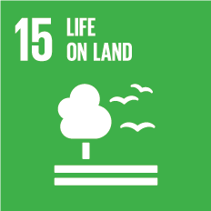

Motivation
Fundamental challenge of sustainability:
People need to invest in something that benefits everyone,
but investing has disadvantages for them personally.
|  |
How can we solve this problem?
How can models help us? |
Outline
Recap: Agent-based modeling
Stable Climate as a Public Good Game
Making a Public Good Game Model
Outline
Recap: Agent-based modeling
Stable Climate as a Public Good Game
Making a Public Good Game Model
The Core Idea of ABM
- Describe a system starting from its components
- Use rules for their actions and interactions
- System state originates from aggregation
### Advantages of ABM
- We can investigate both **micro** and **macro**-scale
- Sometimes **rules** are easier to find than equations
- Flexibility
- Complexity emerges naturally
### ABM-suitability
Which systems are **suitable** for agent-based modeling?
- many **interacting** agents
- agents act **independently**
- dynamic is determined by **micro-scale**
Outline
Recap: Agent-based modeling
Stable Climate as a Public Good Game
Making a Public Good Game Model
What is a Public Good (PG)?
|
Excludable |
Non-excludable |
| Rivalrous |
Private Good |
Common-pool resource |
| Non-rivalrous |
Club Good |
Public Good |
Examples for Public Goods
- A stable climate
- Clean water
- Biodiversity
- Peace




The Public Good Game
PGG = simple description of a system with a public good
- Each player gets the same endowment (eg. 100 €)
- He/she can decide secretly how much of that he/she wants to invest in a PG
- They pay that amount in a pool and keep the rest
- The pool gets multiplied by an enhancement factor
(e.g. 1.5)
- The pool gets divided evenly among all players, even those who did not contribute
PGG - What will happen
- Assumption: People want to maximize their profit
- Investigate using Game Theory
| Decision of others | My decision |
| Everybody else cooperates | More profit if I defect |
| Everybody else defects | More profit if I defect |
| Something in-between | More profit if I defect |
This is called tragedy of the commons!
Suitable for ABM?
Is this version of the PGG suitable for ABM?
No!
The decision of the agents does not depend on interactions but is predetermined by the game.
PGG - Decision influence
What could be other influencing factors in the decision to contribute to a PG?
Social Pressure
Altruism
Hope to influence others
### Social Pressure
- People might decide to cooperate based on their **peers**
- Simplified: Each time step you have a chance to **change your behavior** to the behavior of one of your peers
- Now the dynamic is determined by interaction
- This is **well suited** for ABM
Outline
Recap: Agent-based modeling
Stable Climate as a Public Good Game
Making a Public Good Game Model
### Model Scope
- We want to model the public good game
- **But:** decision based on social pressure
- People are in a social network
- Mixed starting population (e.g. 50-50)
- Every time step: people can **adopt** the decision of someone close to them
### Bifurcation
- This behavior that a system can tip into one of several stable states is called **bifurcation**
- Interesting to investigate:
- tipping point [(Hofer, Jäger, Füllsack, 2018)](https://www.aimsciences.org/article/doi/10.3934/jdg.2018014)
- early warning signals [(Jäger & Füllsack, 2017)](https://journals.plos.org/plosone/article?id=10.1371/journal.pone.0189853)
- how to influence in which direction the system will tip
This will be the topic of next week's lecture.
### Summary
What we learned today
- How is Public Good related to **sustainability**?
- Recap: **Agent based modeling**
- What is the **Public Good Game**?
- What is the **tragedy of the commons**?
- Which variants of the PGG are **suitable/unsuitable** for agent-based modeling?
### Try at home
Things to try out at home:
- Use the model to investigate at what number of defectors the chances of full cooperation become negligible
- Take the [**Quiz**](./gfx/quiz.png)
- Look at a more complex model of [**a sustainability PGG**](http://www.jaeger-ge.org/pgg_sus.html)
- Literature:
- [Axelrod: The complexity of Cooperation](https://en.wikipedia.org/wiki/The_Complexity_of_Cooperation)
- [Milinski et. al: Stabilizing the Earth’s climate is not a losing game](https://www.pnas.org/content/103/11/3994?eaf=)
{kind=link}